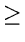

A 2-3 Tree is a null tree (zero nodes) or a single node tree or a multiple node tree with the following properties:
i. Each interior node has 2 or 3 children.
ii. Each path from the root to a leaf has the same length.
Format of a node:
Non-leaf Node
| p1 |
: |
Pointer to the first child |
|
| p2 |
: |
Pointer to the second child |
|
| p3 |
: |
Pointer to the third child |
|
| k1 |
: |
Smallest key that is a descendent of the second child |
|
| k2 |
: |
Smallest key that is a descendent of the third child |
|
Leaf Node
Insert (x)
1. Locate the node v, which should be the parent of x.
2. If v has two children,
- make x another child of v and place it in the proper order
.
- adjust k1 and k2 at node v to reflect the new situation
.
3. If v has three children,
- split v into two nodes v and v'. Make the two smallest among four
children stay with v and assign the other two as children of v'.
- Recursively insert v' among the children of w where
w = parent of v
- The recursive insertion can proceed all the way up to the root, making it necessary to split the root.
In this case, create a new root, thus increasing the number of levels by 1.
Delete (x)
1. Locate the leaf L containing x and let v be the parent of L.
2. Delete L. This may leave v with only one child. If v is the root, delete v and
let its lone child become the new root. This reduces the number of levels by 1. If v is not the root, let
p = parent of v
If p has a child with 3 children, transfer an appropriate one to v, if this child is adjacent (sibling) to v.
If children of p adjacent to v have only two children, transfer the lone child of v to an adjacent sibling of v and delete v.
If p now has only one child, repeat recursively with p in place of v. The recursion can
ripple all the way up to the root, leading to a decrease in the number of levels.
Search
1. The values recorded at the internal nodes can be used to guide the search path.
2. To search for a record with key value x, we first start at the root. Let k1 and k2 be the two values stored here.
- If x < k1, move to the first child.
- If x

k1 and the node has only two children, move to the second child.
- If x k1 and the node has three children, move to the second child if x < k2 and to the third child if xk2.
Eventually, we reach a leaf. x is in the tree iff x is at this leaf.
Path Lengths
Egt. of 2-3 insertion, deletion - http://lcm.csa.iisc.ernet.in/dsa/node119.html